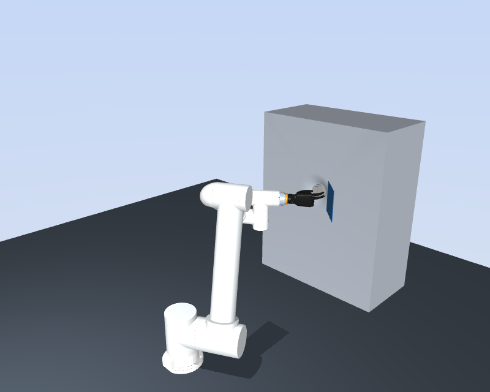
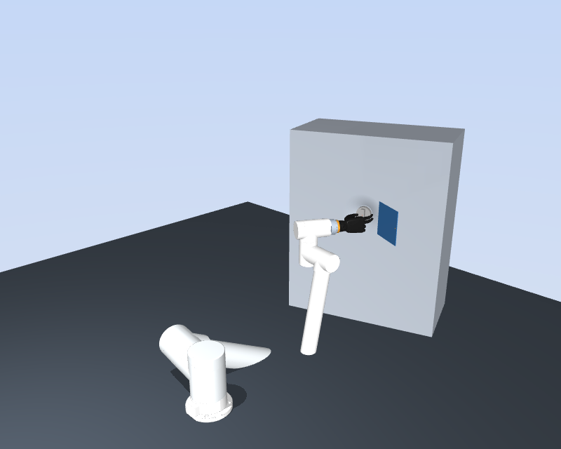
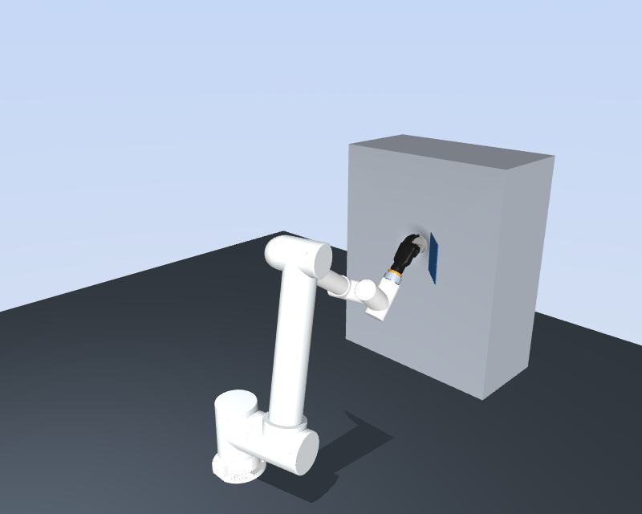
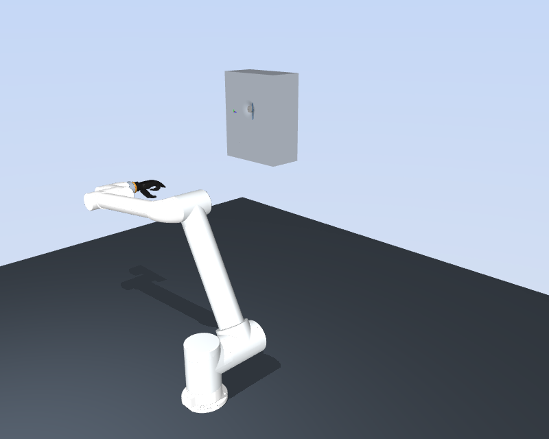
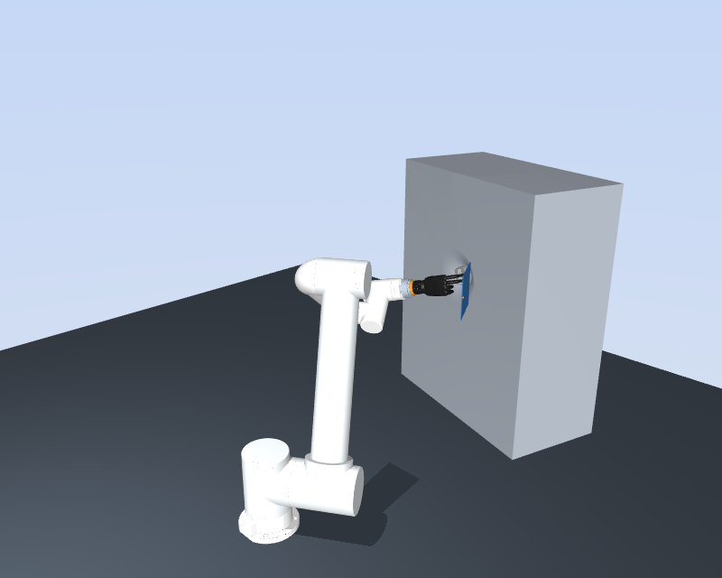

基准
目标预测核对通过；端点 IK 解：12
世界系手根目标（m）：[-0.075, 0.847, 0.58]
预抓目标（m）：[-0.075, 0.747, 0.58]
手保持接近预型。下方场景图片显示端点 IK；无解案例保留初态。实际 MTC 几何回放见：
目标预测核对通过；端点 IK 解：12
世界系手根目标（m）：[-0.075, 0.847, 0.58]
预抓目标（m）：[-0.075, 0.747, 0.58]
目标预测核对通过；端点 IK 解：11
世界系手根目标（m）：[-0.035, 0.787, 0.61]
预抓目标（m）：[-0.035, 0.687, 0.61]

目标预测核对通过；端点 IK 解：11
世界系手根目标（m）：[-0.018148, 0.830576, 0.58]
预抓目标（m）：[0.016054, 0.736606, 0.58]

目标预测核对通过；端点 IK 解：8
世界系手根目标（m）：[0.02, 0.847, 0.525]
预抓目标（m）：[0.02, 0.747, 0.525]

目标预测核对通过；端点 IK 解：0
世界系手根目标（m）：[-3.075, 2.847, 0.58]
预抓目标（m）：[-3.075, 2.747, 0.58]

目标预测核对通过；端点 IK 解：8
世界系手根目标（m）：[-0.136032, 0.852616, 0.559496]
预抓目标（m）：[-0.165335, 0.757005, 0.559496]
